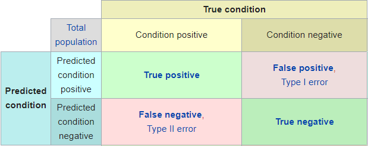

A/B Testing
Entendiendo la estadística detrás de los tests A/B!
Vale, en qué consisten los test A/B?
Un test A/B es una técnica muy utilizada hoy en día en Marketing digital que consiste en llevar a cabo dos acciones diferentes en paralelo y comparar sus resultados. Por ejemplo, estos resultados pueden ser la tasa de conversión de una campaña de marketing (ventas, subscripciones…) o el número de clicks en un enlace respecto a impresiones (Click Through Rate). También es ampliamente utilizado fuera del ámbito del marketing, típicamente en áreas como la farmacología o la psicología.
Supongamos que queremos impulsar las ventas de un producto o servicio y para ello hemos decidido usar un nuevo diseño web. Diseñaremos un experimento, llamado test A/B, mediante el cual seremos capaces de medir la influencia de nuestro cambio. Para ello, dividiremos a nuestros usuarios aleatoriamente en un grupo de control que verá la página como hasta ahora y otro sobre el que probaremos la variante llamado grupo experimental. Una vez llevada a cabo la prueba, compararemos los resultados entre los dos grupos de cualquiera que sea la métrica que estemos midiendo para tomar una decisión sobre qué diseño web utilizar.
El concepto más importante a recordar aquí es que al realizar el experimento sobre una muestra en lugar de hacerlo sobre toda la población, cualquier medida que tomemos tendrá asociada una incertidumbre que tenemos que tener en cuenta a la hora de interpretar los resultados. En nuestro caso, para cada visita solo podemos obtener dos resultados: el cliente compra o no, el usuario se suscribe o no, el usuario se marcha o no…en resumen, éxito o fracaso. Una variable aleatoria de este tipo se dice que sigue una distribución binomial.

Tipos de errores
De cara a diseñar el experimento, necesitamos entender primero la diferencia entre los dos tipos de error en los que podemos incurrir al evaluar los resultados del test. Vamos a suponer que ya hemos realizado el test y hemos obtenido resultados: para cada diseño propuesto hemos medido una tasa de conversión.
En primer lugar, una posibilidad es que la diferencia que hemos medido sea producto del azar: Supongamos que en realidad el nuevo diseño no aporta nada nuevo y no supone ningún aumento en el número de ventas, pero hemos tenido “buena suerte” a la hora de distribuir a los potenciales clientes en grupos (recordemos que este proceso lo hemos hecho al azar) y por pura casualidad hemos vendido más entre los clientes que han visto nuestra nueva web. Esto es lo que se conoce como error tipo I (normalmente llamado \(\alpha\)). Es la probabilidad de alucinar y creer que nuestra variante funciona mejor cuando en realidad no lo hace.
Por otro lado, a la hora de diseñar un test A/B también tenemos que tener en cuenta que podríamos cometer otro tipo de error, esta vez por omisión. Imaginemos que el equipo de marketing propone un diseño que sí funciona (y cuando digo que funciona me refiero a que si tuviera una bola de cristal vería que en realidad sí que funciona. Dicho de manera menos esotérica: si pudiéramos conseguir millones de visitas veríamos sin lugar a dudas que efectivamente conseguimos aumentar las ventas). Sin embargo, como no podemos esperar tanto tiempo para evaluar los resultados tendremos que sacar las conclusiones basándonos únicamente en los resultados de una muestra. Pero como en toda muestra, los resultados que obtengamos están sujetos de alguna manera al azar, a la “suerte” que tengamos al elegir a las personas que conforman los grupos. Esto implica que, cuando damos por terminado el experimento, podríamos llegar a que a través de ambas webs conseguimos convertir exactamente la misma proporción de ventas. Entonces, la pregunta del millón: ¿Estos resultados son significativos? ¿Entonces, el nuevo diseño no tiene absolutamente ningún efecto? ¿O, análogamente al caso anterior, podría ser que hubiéramos tenido mala suerte en la elección de los grupos y no estuviéramos viendo los efectos del nuevo diseño? Esto es lo que se conoce como error tipo II (\(\beta\)): la probabilidad de no obtener resultados significativos cuando en realidad sí que existe diferencia entre los ratios de conversión de cada grupo.

La estadística
Dicho de manera más técnica, en inferencia estadística llamamos contraste de hipótesis al procedimiento seguido para evaluar si una propiedad de una población es compatible con la medida en una muestra. Definimos la hipótesis nula \(H_0\) como la hipótesis que queremos contrastar, aquella de la que partimos y la que mantendremos si no reunimos evidencia de lo contrario. En contraposición, frecuentemente definimos la hipótesis alternativa de manera implícita como “\(H_0\) es falsa”.
- El nivel de significancia estadística o nivel \(\alpha\) es la probabilidad de rechazar la hipótesis nula cuando es cierta. Un nivel de confianza del 95% significa que, si repetiéramos el experimento muchas veces, el 95% de las veces que obtengamos resultados significativos será porque efectivamente la propuesta alternativa mejora el ratio de la propuesta de control, y solo un 5% de las veces obtendremos un falso positivo significativo.
- \(\beta\) es la probabilidad de no rechazar la hipótesis nula cuando es falsa, aunque normalmente se suele hablar de potencia estadística (definida como 1 - \(\beta\)), que es la probabilidad de rechazar la hipótesis nula cuando es falsa. Por ejemplo, planificar un experimento para que tenga una potencia del 80% implica que, si repetimos muchas veces la comparación del grupo de control con una variante que en realidad sí que mejora el ratio de venta, obtendremos resultados significativos el 80% de las veces. Es la potencia de la lupa, nuestra capacidad para distinguir con precisión las diferentes tasas de conversión de los dos grupos.
Con todo lo explicado arriba, es fácil ver que a la hora de evaluar los resultados del test podemos tener cuatro casos diferentes: * a) Verdadero positivo: que los resultados nos indiquen que la variante ha sido un éxito y realmente, si pudiéramos hacer el experimento con toda la población, veríamos que efectivamente el nuevo diseño lleva a una mejor tasa de conversión. * b) Verdadero negativo: que los resultados nos indiquen que la variante no produce ningún cambio y efectivamente sea así. * c) Falso positivo (error tipo I): que los resultados nos indiquen que la variante ha sido un éxito, pero en realidad este resultado se deba simplemente al azar. * d) Falso negativo (error tipo II): que los resultados nos indiquen que la variante no produce ningún cambio, pero en realidad sí que lo produce y lo que ocurre es que no hemos obtenido suficiente muestra.

Tamaño muestral
¿Qué papel juega el tamaño muestral en un test A/B? Cuanta más muestra, menos incertidumbre. La fórmula con la que podemos calcular la incertidumbre asociada a una medición es la siguiente:
\[ \hat{p} \pm z \sqrt{\frac{\hat{p}(1-\hat{p})}{n}} \]
siendo \(\hat{p}\) la proporción observada, z el Z-Score y n el tamaño muestral. El Z-score de una medida nos indica dónde se ubica ésta en la distribución, es decir, cómo de lejos en número de desviaciones estándar está esa medida de la media.
Una cuestión habitual a la hora de diseñar un test A/B es: ¿Qué tamaño muestral necesito?
Para encontrar la muestra necesaria para nuestro experimento podemos usar la función de R power.prop.test que acepta como argumentos el tamaño muestral, las tasas de éxito de nuestros grupos, la significancia y la potencia estadística. De ellos, dados cuatro nos dará el quinto. De esta manera se convierte en la herramienta perfecta para diseñar un test estadístico de este tipo: Podemos encontrar qué tamaño muestral nos permitiría observar cierto efecto dadas unas tolerancias determinadas al error, o encontrar qué potencia estadística tendrá un test con una diferencia entre ratios y un tamaño muestral dados.
Con esta herramienta llegamos a otro concepto importante: Definimos el MED (del inglés Minimum Detectable Effect) como el mínimo efecto significativo que podremos detectar dado un tamaño muestral y unas condiciones dadas de significancia. Este concepto deja intuir otra idea quizá implícita pero sencilla de entender: Para poder ser capaces de distinguir mejoras pequeñas de rendimiento deberemos tener una muestra suficientemente grande, pues si no, es fácil que cometamos un error de tipo II (que la mejora exista pero no seamos capaces de verla).
Dados los cuatro posibles escenarios anteriores, diseñaremos adecuadamente el test teniendo en cuenta las consecuencias de los distintos errores. ¿Cuáles son las consecuencias de concluir que la nueva campaña de marketing funciona mejor que la anterior? ¿Cuáles son las consecuencias de tomar la decisión de desechar la nueva y efectiva campaña porque no hemos obtenido resultados concluyentes debido al tamaño insuficiente de la muestra? Este tipo de preguntas son las que debemos de respondernos a la hora de calibrar la tolerancia que tenemos a los errores \(\alpha\) y \(\beta\). Y para esto no hay una única respuesta válida. Normalmente dependerá de los riesgos que estemos dispuestos a correr y las consecuencias de cada tipo de error: No es lo mismo vivir engañado pensando que tu nueva campaña de marketing aumentará las ventas un 10% que concluir y publicar en una revista científica que has encontrado la cura del cáncer cuando lo único que estás viendo en tus datos es ruído estadístico y has sido engañado por el azar. Por tanto, estos parámetros son específicos del dominio en el que trabajamos.
Son mis resultados significativos?
Por último, una vez establecida la confianza requerida, dimensionado adecuadamente el experimento y recogidos los datos, la pregunta que intentamos resolver ahora es: ¿Cómo de probable es que hayamos obtenido resultados positivos por pura casualidad, y que realmente los ratios de conversión de ambos grupos sea idéntica, pero hemos tenido malísima suerte en las medidas?
Para saber si hemos obtenido un resultado estadísticamente significativo podemos realizar un test de hipótesis con la función de R prop.test.
Además, desarrollé una shiny app que nos permite realizar ese cálculo sin usar R.
El concepto importante aquí es el p-valor. Supongamos que hemos obtenido que nuestra variante lleva el ratio de conversión del 5% al 8%. ¿Es una mejora significativa? Para responder a la pregunta nos apoyamos en un test estadístico llamado Z-test que, dados los ratios y los tamaños muestrales de cada grupo nos dará la probabilidad de haber obtenido un resultado tan extremo o más por puro azar, suponiendo que en realidad no hay ninguna diferencia entre nuestra variante y el grupo de control. Esa probabilidad es el p-valor.
Únicamente falta comparar el p-valor obtenido con nuestra tolerancia máxima al error de tipo I (\(\alpha\)) del que hemos hablado antes: Si el p-valor es menor que \(\alpha\) rechazaremos la hipótesis nula, esto es, daremos nuestro resultado por significativo. En el caso contrario (p-value > \(\alpha\)) no concluiremos que la variante no mejora, únicamente podremos decir que no hemos conseguido encontrar evidencias de que sí lo haga. Análogamente, en los juicios, cuando no se han encontrado pruebas de que el acusado sea culpable se usa el término no culpable ya que eso no quiere decir que sea inocente. Absence of evidence is not evidence of absence.
Dada la incertidumbre asociada a la propia medición, podemos visualizar la distribución de probabilidad de la tasa de conversión de cada grupo con un gráfico como el siguiente: dos distribuciones binomiales centradas en los valores medidos y cómo se relacionan gráficamente los principales conceptos discutidos en este artículo: \(\alpha\), \(\beta\) y p-valor.

Además, he desarrollado una pequeña aplicación para saber si nuestros resultados son significativos o no, y aprender cómo se relacionan estos conceptos (Potencia estadística, errores \(\alpha\) y \(\beta\), tamaño muestral y tamaño del efecto). Échale un ojo!
Pablo Cánovas
Data Scientist en Repsol Electricidad y Gas
Data Scientist, físico de formación | Tidyverse believer, piping life | Hanging out en TypeThePipe